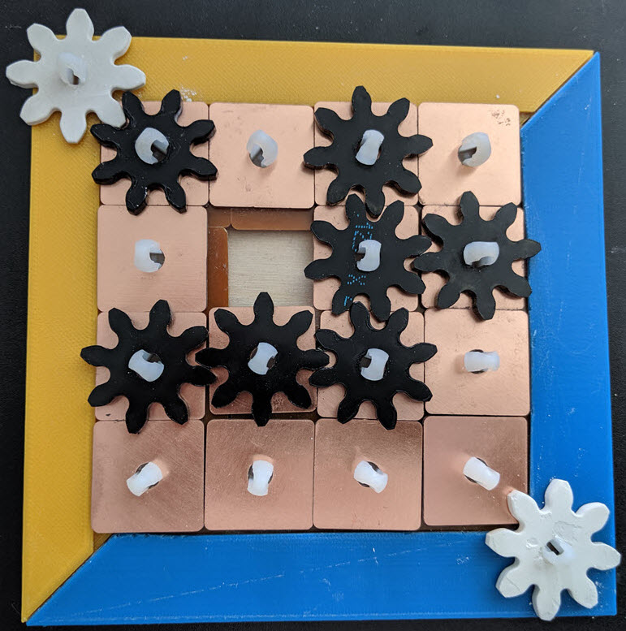
For the Final Project in the class, we were asked to fabricate an object of our choosing using at least four of the techniques that we had learned during the course. I chose to create a sliding puzzle (i.e., a fifteen puzzle)which requires formation of a pattern that required moving mechanisms (gears) to be properly aligned for the puzzle to be completed. The idea originally came from the game Cogs, a puzzle game involving moving mechanisms in a "Steampunk" style.
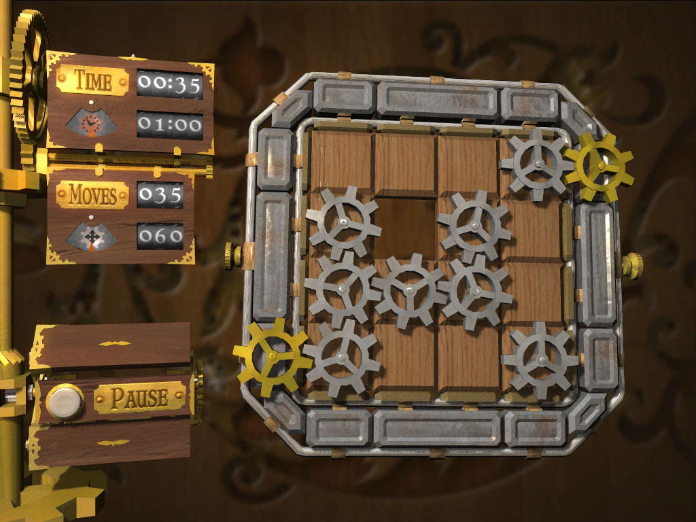
The techniques that were used to accomplish this included: parametric CAD (in Onshape), laser cutting, 3D printing, 3D CNC milling, stock parts, molding and casting, and interlocking parts. All parts were designed in the same Onshape document, which was iterated upon. The Onshape source parts are saved to the cloud and available for public viewing in my Onshape documents: Page 1, Page 2, and Page 3. Additional source files were exported from Onshape for processing in other software, such as Dremel Digilab for 3D printing, Autodesk Fusion 360 for CNC milling tool path creation, and Bantam tools for CNC milling. These files can be found in my Github repository.
Ultimately, the project did not work as intended due to tolerancing issues that I thought I had accounted for, but 3D printing and toolpaths had other ideas for me.
Details of the how the project was accomplished are documented below.
After sourcing all of the materials that I planned on using for the project, I began to measure relevant thicknesses, diameters, lengths, and widths to use as variables within Onshape, so that if things needed to change, the values would be carried forward to all Parts where the values were used. I also began to design the tile pieces, gears, and wooden platform that would be fabricated in Onshape. I had to think about how I would be fastening the gears to the wooden frame and decided I would continue to use the plastic rivet stock parts and would drill holes through the platform and frame. Additionally, in order to fasten the tile pieces to the frame, they would need to be off-center from one another, which primarily affected the positioning of the holes.
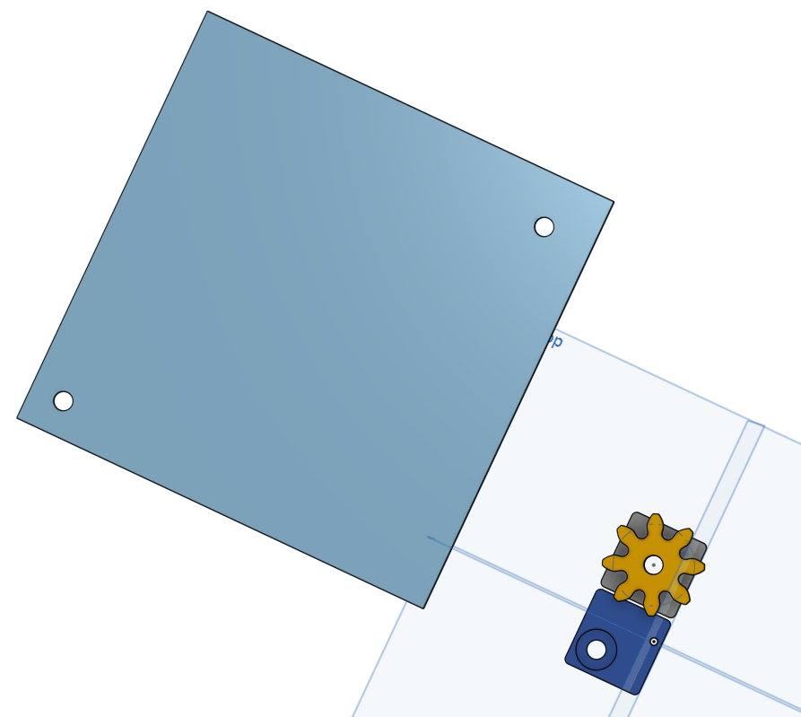
I finalized the design for the frame and felt ready to begin fabrication. I exported the top face of the wooden platform and the gears as .DXFs for laser cutting. These files were brought into Adobe Illustrator at original scale, where the gears were duplicated and arrayed to quickly cut multiple parts. The wooden platform needed no additional processing. I turned on the laser cutter following safety protocols, turning on the air assist and exhaust. I then placed the material on the laser bed (Delrin/Acetal for the gears, wood for the platform) and homed the laser to the top of the material. I initiated the print and set the material size in the Preferences to match. For the Delrin, I based my settings off of what Haihua and Joshua had used in week 4, but decreased the speed based on the additional thickness (Speed 6; Power 100; Frequency 100). For the wood, I followed the suggested settings from the MILL (Speed 3; Power 100; Frequency 100). The Delrin had some melting issues, which required some force to remove the gears from the rest of the material, but the cuts seemed smooth. No acommodations were made for the kerf, because I planned on using the additional removed material to account for potential tolerancing issues.
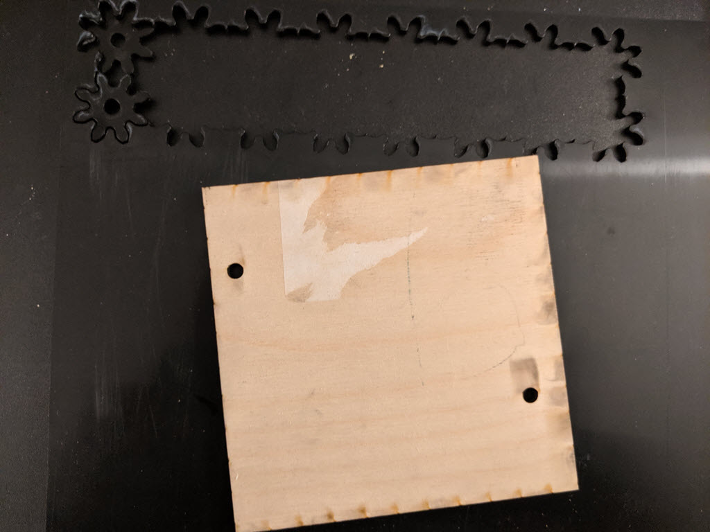I exported the tile piece to Fusion 360 as a step file based on the suggestion of Joshua, since the previous process of exporting to KiCAD would not work for geometry with multiple stepdowns (though I initially tried this using a .DXF). I generated toolpaths following a similar work process as Week 6, where I setup the model and then selected 3D adaptive clearing. I then used the post processor to generate the gcode file for use in Bantam Tools.
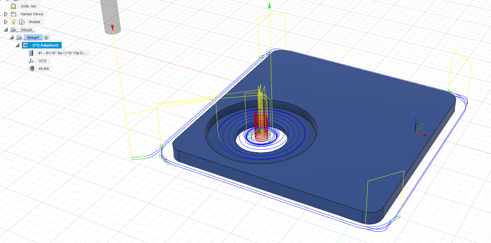
I opened this file in Bantam, set the Bantam plan for the FR1 sandwich that I created, loaded the FR1 into the milling machine, changed the end mill to the 1/16" flat-end that I had chosen for the toolpaths, adjusted the number of toolpaths and locations to cut multiple tile pieces at a time, and then began milling. When the first sandwich finished, I measured the exterior edges of the each tile and found that they were properly sized, but measured the diameter of the counterbored hole and found it to be too small for the plastic rivet to fit. I asked Nadya about the process, since the dimensions that I had selected matched, but the cut was significantly less. She mentioned that it was possible that the adaptive clearing tool was a roughing toolpath and that it was expected to run a finishing toolpath. So instead of adaptive clearing, I ran a series of 2D toolpaths using pocket and contour to create the geometry. However, I didn't have time mill using this setting, so I saved it for the next time I would be in the MILL.
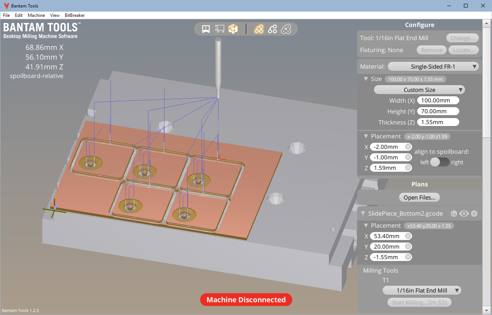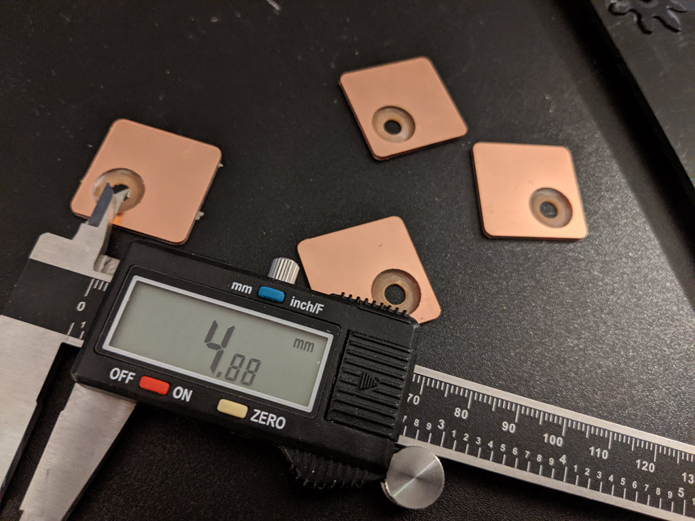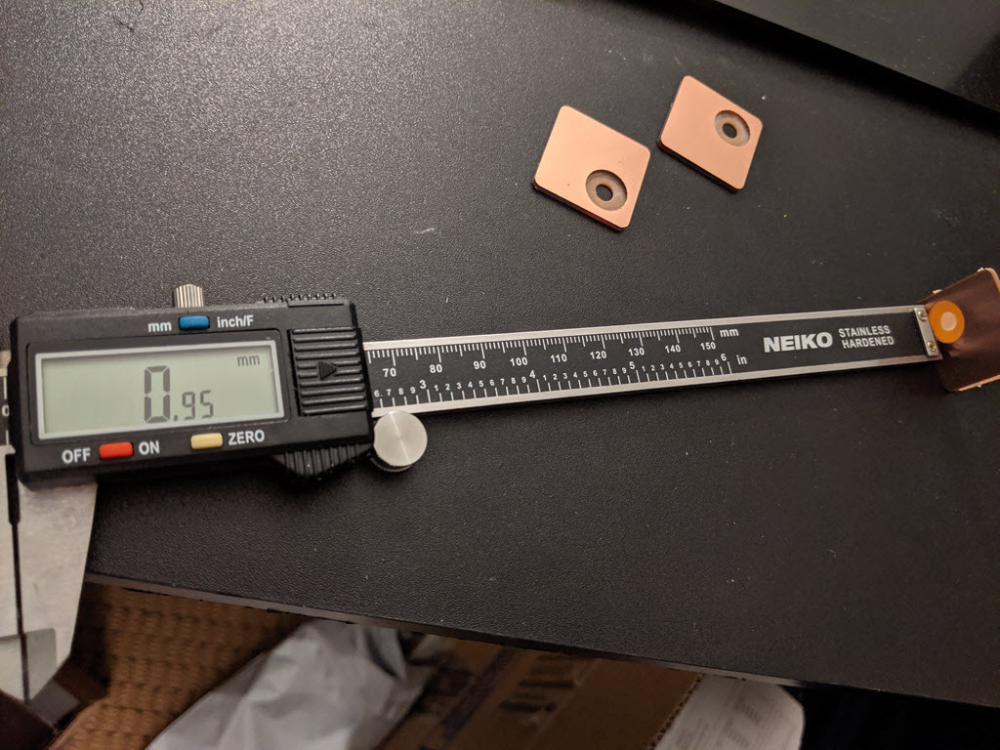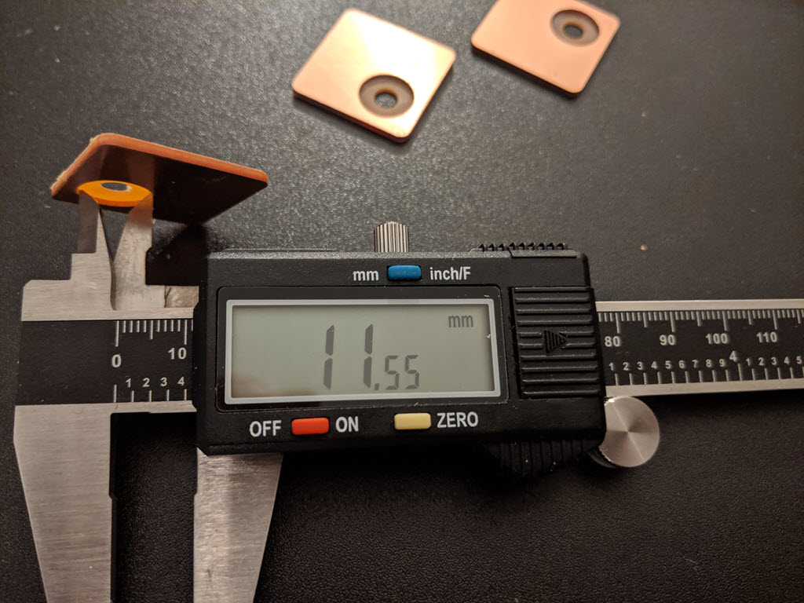
For the 3D print, I exported the frames as .STLs and loaded them into Dremel Digilab and adjusted the settings as seen below. I chose to try running the larger frame first in order to take advantage of running it over night. The frame just barely fit into the machine with a small brim, which was lucky. I left at this point, since the MILL was closing.
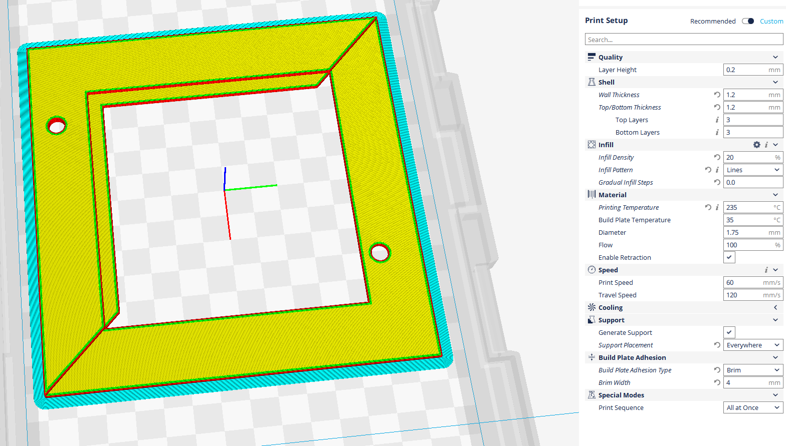
I realized that the frame was too small, because I had done my math incorrectly for offsets based on the size of the tile pieces. So, even though I had 3D printed a piece of the frame, I had to revise the entire part (I also realized the holes were not required for the wooden platform, because I would orient the rivets upwards just like my tile pieces to give the same Z-direction offset) and added the same counterboring that was used on the tile pieces. I also ran the print for the other portion of the frame simultaneously after correcting its geometry as well, which was just location of the hole (I was able to take this piece with me as I left for the day, and it seemed good, with 4 tile pieces fitting along the interior edge).
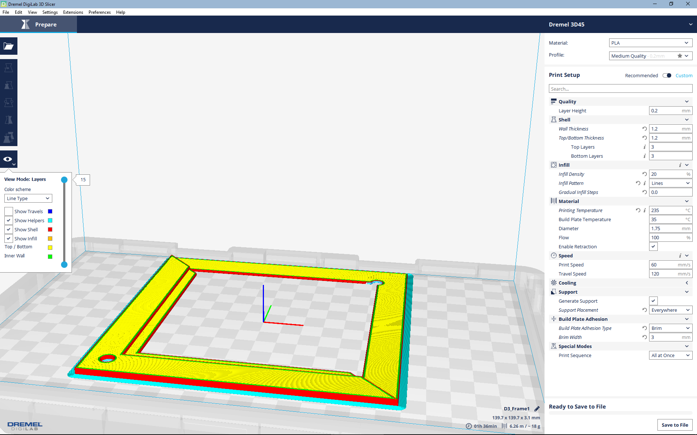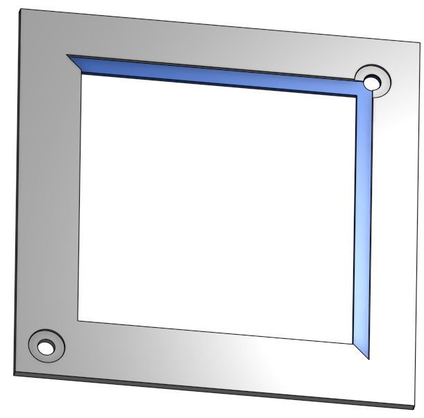
For CNC milling, instead of adaptive clearing, I ran a series of 2D toolpaths using pocket and contour to create the geometry. I happily began milling with the same settings as previously and things were looking good, managing to finish a good number of pieces. However, when I got home, I realized that the pocket toolpath had a setting checked which left material, resulting in a strange counterboring which did not work for my rivets to completely enter the hole. This was quite disappointing to discover, but also a lesson to confirm the look of your CNC milled pieces before duplicating. I tried putting some tile pieces together anyway just to check the fitting with the gear installed, and movement + interlocking of the gears seemed to work reasonably well, though the pieces would torque away from each other.
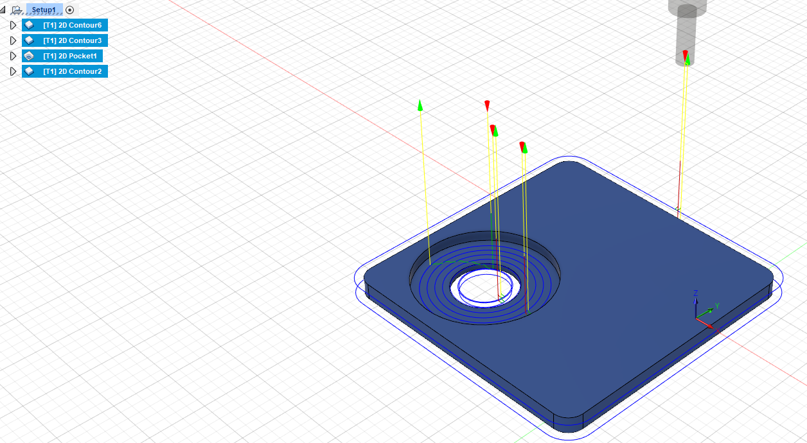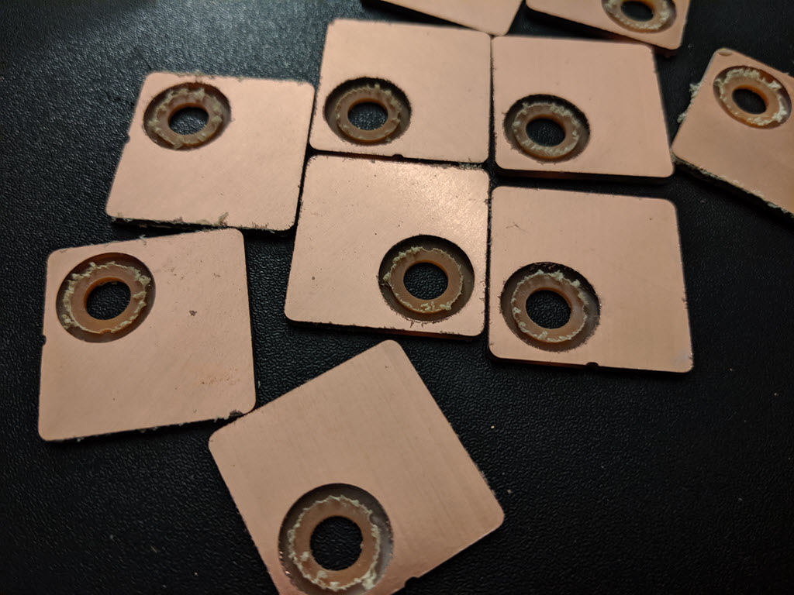
I decided to start with the upper portion of the tile pieces, which did not have the counterboring to ensure that I had some working pieces after CNC milling today. I ran these with two 2D contours, since there wasn't any special geometry (they probably could have been done in KiCAD as well, but already being used to the Fusion 360 process, stuck with it). These pieces DID come out properly. I switched to milling the bottom tile pieces ensuring that all my toolpaths were selected when exporting the gcode file. Things actually ran properly this time. However, the plastic rivets still did not fit flushly into the counterbored hole, but I thought I could manage, since it was my initial plan to have them stick out mildly so that the pieces would move smoothly over an unfinished wood surface. I assembled some tile pieces with the rivet and attached the gear as well, and tried using tacky glue to keep the upper and bottom halves of each tile from rotating.
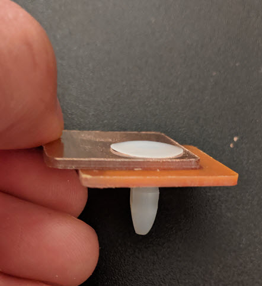
I obtained the help of the MILL staff to use the bandsaw and cut my machineable wax from Assignment 6, in order to create another mold for the gears. After receiving training and certification on the machine, I loaded the .STL of the gear block into Fusion 360 and ran an adaptive clearing toolpath. Similar to the tile pieces, I loaded the wax using double-sided tape and began running the toolpath. After the milling finished, I noticed that the gear seemed slightly larger than the laser cuts pieces, which was probably due to using the 3D adaptive clearing, instead of 2D contours and pockets, which I could have done, given the lack of curvature in the gears). The pocket actually cleared too much and left only 3 sides for the silicone mold to be poured into, but I just put this edge up against the remaining machineable wax and held it in place using a heavy object (book). I left this mold to cure overnight and planned on demolding it the next day.
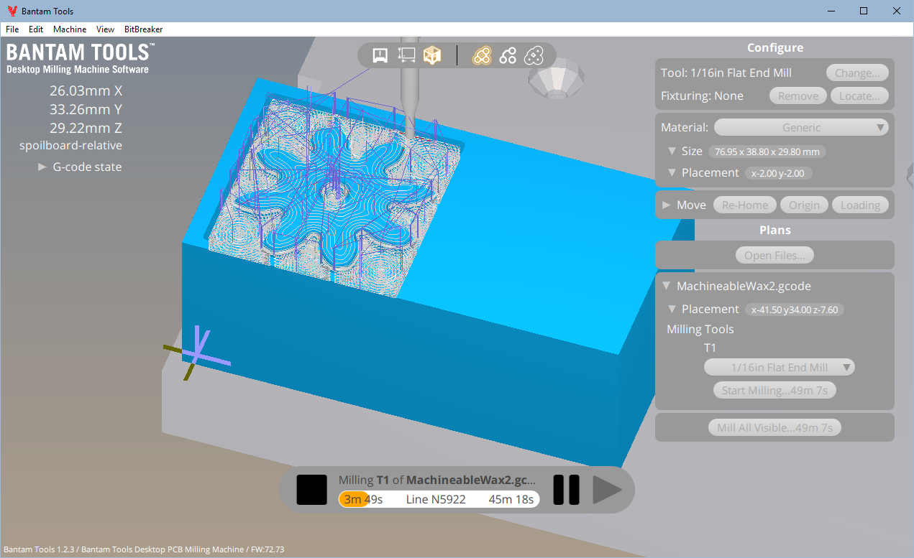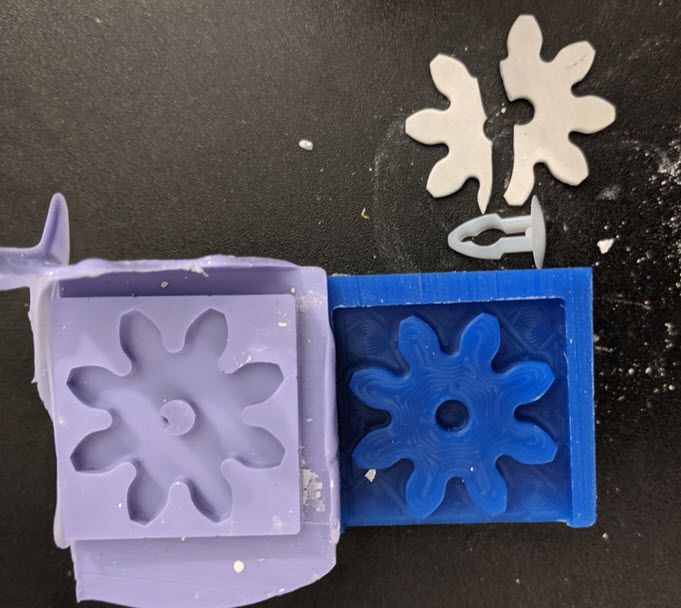I picked up the primary 3D printed frame. While the print itself was okay, I tried to place 4 tile pieces inside it, with the secondary frame sandwiching them, but discovered that the tile pieces did not fit, having maybe a 1.5-2mm overlap with the frame. This was confusing, as I had left a ~0.5mm gap in case milling of the tiles wasn't perfect. But I guess 3D printing had other plans for me and added additional materials to the interior edges (I actually ran into issues with both frames, where the brim was not easily removed from the pieces and had to be cut off). I didn't have the time to run another 3D print (not that I was even sure how to account for added material, whether it was some percentage of additional material, or a set value), so I decided to try to cut and sand away at the material to create an accurate fit. While this worked for the secondary frame and the bottom layer of the primary layer, I realized that it would be almost impossible to cut away at the second layer of the primary frame, since the PLA was firmly printed and the edge was too narrow for me to sand away at without wearing away at the first layer. More or less, I gave up on getting a nice tolerance and fit and worked on the manual technique of jamming things together and not worrying about actually being able to move the tile pieces. I assembled the "puzzle" by tacky gluing the frames to the wooden platform and began placing tiles into the frame. I also realized that the one of the rivets that went through the frame would obstruct tile pieces from being placed properly, something I might have realized if I had actual modeled the rivets and placed them in my assembly, rather than just taking their dimensions to design the holes, although some collisions are still hard to see in Onshape.
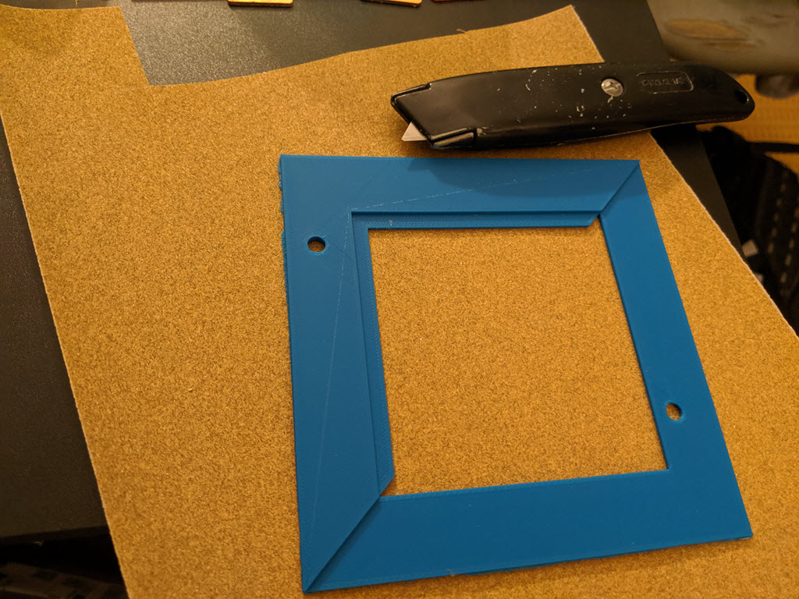
I demolded the silicone from the machineable wax and prepared plaster for casting. I poured two separate casts using an eye-balled ratio like the previous assignment. Things turned out...okay ╮( ꒪౪꒪)╭.
Although I had to recast a part after cracking one in the process of putting it into the final assembly. Plaster is not a particularly robust material, HEH.
There are a couple of items which I think could have been modified to make for a better final product.
Overall: Aside from the problems I ran into during this project (which I somehow managed to avoid in the assignments leading up to it), I think...
I got to learn some fun techniques and definitely would spend some free time in the makerspaces available when I'm not so busy (and sororities aren't rasterizing all the things). Time to find out if students not taking summer quarter, but are signed up for autumn, still have access...